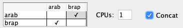
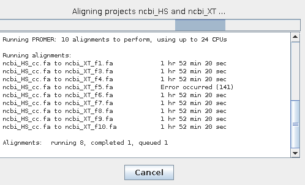
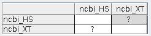

This document discusses how to deal with one or more MUMmer alignments failing. This document refers to the v5.0.8. The corresponding
mummer documentation is
v3 and
v4.
Contents
If none of the following helps, contact symap@agcol.arizona.edu.
The alignment programs are provided in the symap/ext directory. There are
executables for 64-bit Linux and 64-bit MacOS. SyMAP will
select the correct directory for the machine you are running from, i.e. you
do not need to do anything. When SyMAP creates a database, it (1) checks the MySQL variables, and (2) checks
that the external programs are executable. If you see a message like:
***Error - file is not executable: ext/mummer/mac/promer
Execute:
> chmod 755 ext/mummer/mac/promer
Execute the program from the command line to make sure it works on you machine, e.g.
>./ext/mummer/mac/promer
USAGE: promer [options] <Reference> <Query>
Try './ext/mummer/mac/promer -h' for more information.
The above shows that the promer code will execute on my MacOS.
If the MUMmer alignment fails, inspect the log files.
The log files are as follows:
symap_5/
error.log # a SyMAP error will write its trace data into this file and list failed MUMmer
logs/
<dbName>_LOAD.log # this keeps track of data loaded or removed from the database.
<project-name1>-to-<project-name2>/ # one directory per project-to-project alignment
<alignment>.log # one file per alignment
symap.log # this keeps most of the output shown on the terminal for this alignment
e.g.
symapDemo_load.log
demo_seq_to_demo_seq2/
demo_seq_cc.demo_seq2_f1.log
demo_seq_cc.demo_seq2_f2.log
symap.log
- If an alignment is listed as failed in the error.log file,
the corresponding <alignment>.log file will contain the MUMmer error.
- If there
is no error listed in the error.log, check the symap.log and the tail
of the alignment files.
-
If the error is not found in the log files or it is not clear, try the following:
Out of memory
A MUMmer failure is typically from insufficient memory.
The following error typically indicates a memory problem.
Alignment program error code: 141
20220512|075853|6007| ERROR: mummer and/or mgaps returned non-zero, please file a bug report
This error will probably not show at the terminal; read the above section.
There is no straight-forward way to know if you have enough memory as it depends on the
size and complexity of the two genomes being compared. If you think memory may be tight,
you can limit the amount used at one time by limiting the number of CPUs, as each
CPU uses a considerable amount of memory (e.g. 4 CPUs could collectively use 20GB of memory at once).

By default, all sequences of the 1st genome are concatenated into one file and then
multiple files are created from the 2nd genome to be searched against the first;
the multiple files may have two or more sequential chromosomes concatenated together to create
files that are >60M. If memory is limited, you can uncheck Concat so that multiple files are
created for each genomes, and all files from the 1st genome are searched against the 2nd genome.
The following statistics are from comparing Arabidopsis thaliana (119M) against Brassica rapa (297M)
on a MacOS using 1 CPU.
| Concatenated
|
| Not concatenated
|
48819 hits
334 synteny blocks
46319 gene hits
38334 synteny hits
Finished in 1 hr 7 min 41 sec
|
|
48846 hits
334 synteny blocks
46348 gene hits
38345 synteny hits
Finished in 1 hr 34 min 29 sec
|
Not-masked or Soft-masked
A memory problem can occur if the genome sequence is not masked or only soft-masked.
Either: (1) change the sequence to hard-masked, or (2) set the SyMAP parameter
mask_all_but_genes to yes.
If an alignment fails immediately, and if the last line of the first <alignment>.log file is:
1: PREPARING DATA
the reason is probably that your machine does not have near enough memory as MUMmer could not even
prepare the data. Try it again with unchecked Concat; if that does not work, you need more memory.
One or more fails
Sometimes just one or a few of the alignment processes will fail. You will see a line such as:
Error: Running command: /Users/cari/Workspace/symap_5/ext/mummer/mac/promer
-p data/seq_results/demo_seq_to_demo_seq2/align/demo_seq_cc.demo_seq2_f2.promer
data/seq_results/demo_seq_to_demo_seq2/tmp/demo_seq2/demo_seq2_f2.fa
data/seq_results/demo_seq_to_demo_seq2/tmp/demo_seq/demo_seq_cc.fa
| 
|
You will see the failure on the dialog box as is
shown on the left. The remaining processes will continue. When all processes are complete,
you will see a "?" for the pair as shown on the below.

Select the "?" followed by
Selected Pair and it will complete the failed processes.
|
A preferred way is to set CPUs to a low number if the genomes are large, that way,
it will likely finish the first time.
Using MUMmer4 from within SyMAP
Sometimes when MUMmer v3 fails, MUMmer v4 will work.
MUMmer4 is included in SyMAP package with a fix to promer (make sure you get v5.0.8 or later).
Enter the ext/mummer4 directory and follow the instructions in the README.
My observations on MacOS indicate that MUMmer v4 takes more memory
but less time than MUMmer v3.
Running MUMmer from the command line
| Go to top |
If you need to run MUMmer using the command line from some other machine, do the following:
Example of using mummer for loaded projects demo_seq and demo_seq2:
If you try this with demo_seq and demo_seq2, make sure there is no current alignment in the
database or disk for your project (e.g. Clear Pair).
Demo_seq has chr3 and chr5, demo_seq2 has chr1 and chr3; these will be compared separately against each other.
Demo_seq is alphanumerically less than demo_seq2 , so it is first in the directory name
but second in the command arguments (this is how SyMAP knows which
project Chr3 belongs to). The commands are as follows:
cd data/seq_results
mkdir demo_seq_to_demo_seq2
mkdir demo_seq_to_demo_seq2/align
touch demo_seq_to_demo_seq2/align/all.done
cd ../..
ext/mummer/mac/promer data/seq/demo_seq2/sequence/chr1.seq data/seq/demo_seq/sequence/chr3.seq
ext/mummer/mac/show-coords -dlkTH out.delta >chr1chr3.mum
mv chr1chr3.mum data/seq_results/demo_seq_to_demo_seq2/align
rm out.delta
This would need to be repeated 3 more times for chr1chr5.mum, chr3chr3.mum, chr3chr5.mum
(suggestion: put the commands
in a script). The resulting align directory will have:
all.done chr1chr3.mum chr1chr5.mum chr3chr3.mum chr3chr5.mum
When symap is started and demo_seq and demo_seq2 selected, there will be a "A" in their cell; select it followed by
Selected Pair and it will load the alignments and compute the synteny.
If none of these suggestions fix your problem, email symap@agcol.arizona.edu with the following files
(refer to the files discussed in Finding the problem):
- error.log
- logs/<project-name1>-to-<project-name2>/symap.log
- The _fn.log file from the alignment that failed, where n is the alignment number
and the prefix before the "_" is <project-name1>_cc.<project-name2>.
- Any output to the terminal (either copy and paste into the email, or send a screen capture)
Executable on MacOS
Any executable that has not been okayed by Apple get the error message
cannot be opened because the developer cannot be verified
Hence, you need
to use the Finder to enter all /ext/<program>/mac directories,
select each program, then choose to Open it; it will run the program in a terminal
window and be saved as a program that can thereafter be run.
Early versions of MacOS
The MacOS executables were compiled on a MacOS 10.15. They will not work on old versions such as MacOS 10.9.
Try the following:
cd ext/mummer
mv mac mac_506
mv mac_pre506 mac
cd ../muscle
mv muscle muscle_506
mv muscle_pre506 muscle
These executables compiled on MacOS 10.9 may work on your Mac.
|


{kind=link}
{kind=link}
{kind=link}